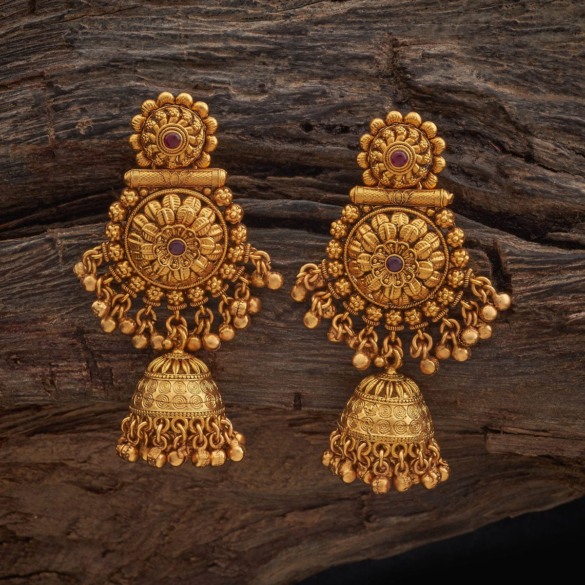
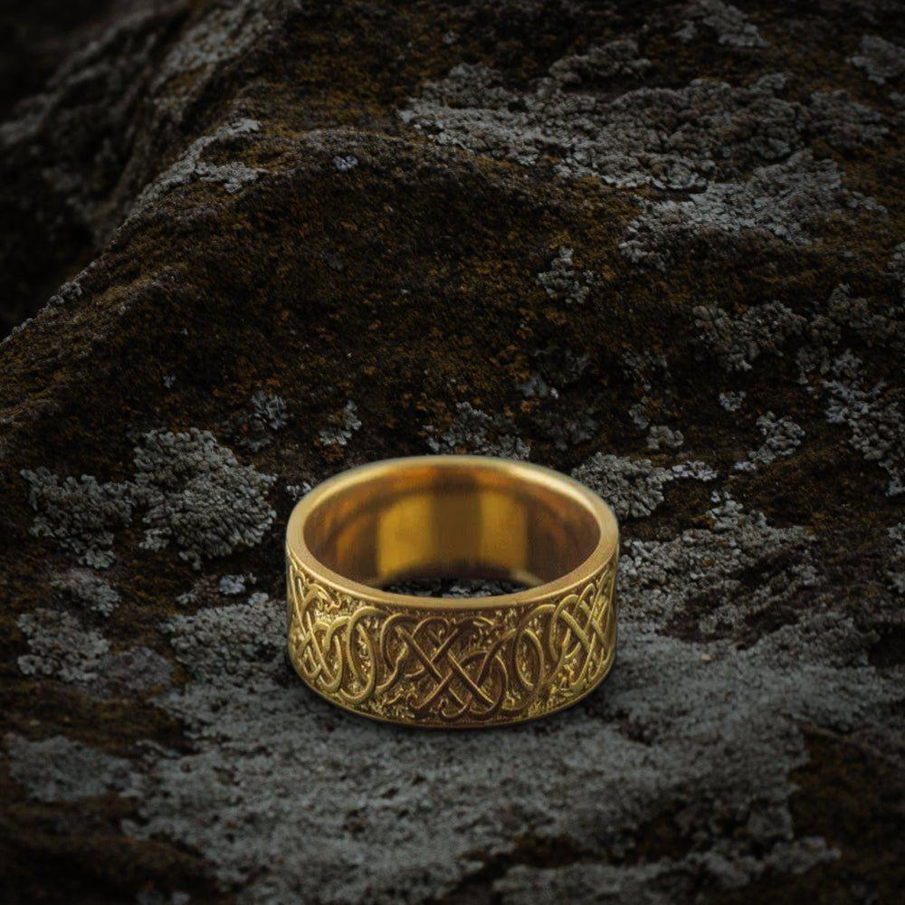
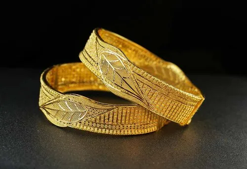
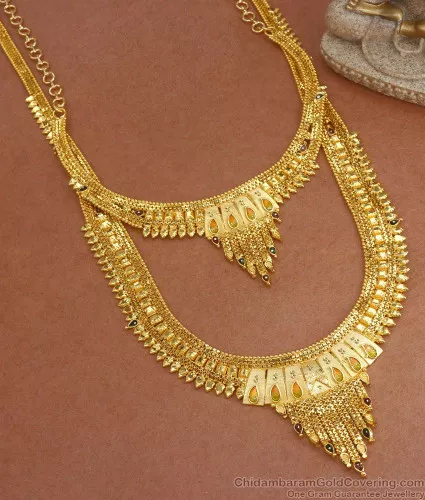
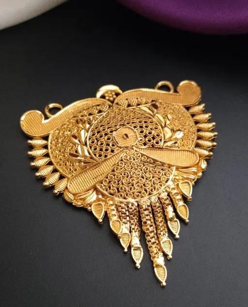
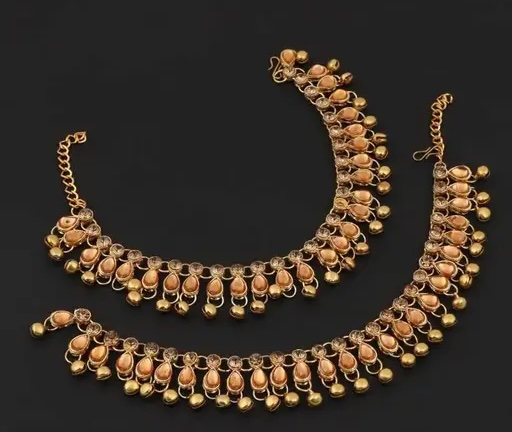

Elevate every moment with our Earrings Collection—where centuries-old Omani filigree meets contemporary grace. Each pair is painstakingly hand-wrought in 18K, 21K or 22K gold by master artisans, then crowned with responsibly sourced diamonds, emeralds or sapphires. The result is a sublime harmony of light and movement that frames the face with timeless beauty and uncompromising quality.
Discover the art of adornment in our Rings Collection, a showcase of sculptural artistry and gemstone brilliance. From slender, ribbon-like bands in 21K gold to bold platinum solitaires set with conflict-free diamonds, every ring is hand-carved, polished and inspected to perfection. These heirloom pieces are designed to celebrate life’s most precious milestones with elegance that endures for generations.
Embrace the poetry of form in our Bracelets Collection—where strength and delicacy coexist in perfect balance. Whether a minimal 18K gold bangle or an opulent 22K cuff inscribed with traditional Omani motifs, each bracelet is hand-forged, engraved and polished by seasoned artisans. Let these wearable masterpieces accentuate your wrist with the subtle confidence of true luxury.
Adorn your décolletage with our Necklaces Collection, a narrative spun from threads of heritage and innovation. Crafted in 21K gold and platinum, each necklace is born from delicate hand-engraving and precision stone-setting— pearls, rubies and diamonds aligned to catch the light in exquisite harmony. These pieces transcend accessory to become heirlooms, bearing stories of craftsmanship and culture.
Experience the allure of miniature grandeur in our Pendants Collection. Each pendant—cast in 21K gold or platinum—is a singular statement of elegance, featuring a solitary precious gemstone embraced by fine metalwork and subtle engraving. Designed to capture the eye and the heart, these keepsakes bridge personal expression with timeless artistry.
Celebrate the rhythmic spirit of tradition with our Payals Collection. These handcrafted anklets in luminous 22K gold evoke the dance of desert winds and the melody of Omani culture. Intricate chain links and ornate filigree motifs create a gentle jingle that honors heritage and invites admiration with every step.
